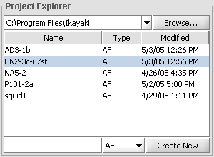
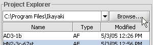
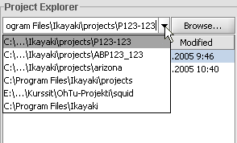
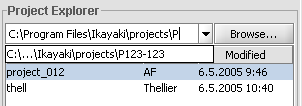
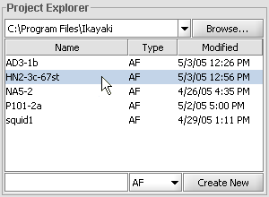
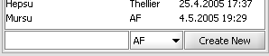

Project Explorer
Here you select the directory and in it, project file to save your measurements.
Changing current directory
Three ways for doing this:
- Click
Browse..., use the opening standard directory chooser dialog to select directory to change to. - Click the down-arrow next to text field showing the current directory; click desired directory from appearing directory history.
- Click into the text field showing current directory; write the new directory there.

OR
Directory history shows recently visited directories, where project files were opened. Last visited directory is shown on the top.

OR
Use down- and up-arrows, or tabulator and shift-tabulator to cycle through appearing autocomplete list. Press enter to change the directory. If the directory does not exist, text field is flashed red for error and directory is not changed. While typing a new directory, press esc to cancel and revert the text field back to current directory.

Opening a project
Click desired project from file list; clicked project will open.
Creating a new project
Click into the empty text field below project file list; write the name for new project. Click AF combobox to change project type as Thellier or Thermal, if needed. Click Create New, or press enter, to create the new project into current directory. If a project with the same name exists, or project filename has errors, text field is flashed red and the project is not created.
Measuring selected project
See AF or Thellier measuring sequence. The project being measured is shown with a purple background, and just-measured with a green one.
Project list headers
Name-columnd shows the project file name (without .ika extension).
Type-column indicates project type: AF, Thellier or Thermal.
Modified-columnd holds the last modification time of the project. Any change to project's state modifies and saves the project, such as executing a measuring step or changing project information fields.
Sorting the project list
Project list can be sorted with any of the column headers (Name, Type or Modified) by clicking that header.
Exporting project(s) as DAT, TDT or SRM files
Right-click project file to export, or, shift-click, ctrl-click or drag mouse to select multiple files and right-click on the selection. Chooce desired export format and location from appearing popup menu.
If any of the first choices with no location is selected, a file- or directory-chooser dialog appears; use it to specify filename (for single file export) or directory (for multiple file export) where to export.